An action is a family applied to arguments, a = f(θ): the family is one of twelve verbs, every argument is a referring expression grounded on the scene ("the knob controlling the rear-right zone") or a measured quantity (37 %, level 5, 2/5 cup). No object, position or amount is an action of its own. The runs below were produced from English sentences by the semantic layer (grounder, quantity parser, expansion into execution primitives, then the existing compiler, physics and bake); none of them was authored as a step list.
family signature meaning go_to go_to(Ref[place]) approach a place or object; needs locomotion (fixed feet today: succeeds only when already within reach) look_at look_at(Ref) turn head and gaze to an entity press press(Ref[control], hold: Dur = 0.3 s, times: Count = 1) push a key; the device consumes the measured activation turn turn(Ref[control], to: Setting | by: Extent) turn a knob or dial to a setting or by an angle; re-grips every ≤ 75° set set(Ref[control | zone | device], Setting) reach a setting by the control's own means: a knob turn or a key sequence open open(Ref[part], to: Frac = 1) drive a door, drawer, rack or tray to a fraction of its travel close close(Ref[part], to: Frac = 0) the same toward the closed end pick_up pick_up(Ref[object]) grasp and lift (only as the first half of a move in this executor) place place(Ref[held], Rel, Ref[place]) set a held object down on / in a place (second half of a move) move move(Ref[object], Rel, Ref[place]) pick up, carry and set down pour pour(Qty[volume], from: Ref[held container], into: Ref[container]) transfer liquid; needs the liquid ledger (not in this executor) add add(Qty, of: Ref[substance], into: Ref[container]) fetch a substance and transfer a quantity (not in this executor) wait wait(Dur) let time pass; device timers, displays and effects run
One family, one continuous argument: open(the microwave door, to: Frac) the same open / close family with a different opening fraction per run; the door is driven to closed + Frac · (open − closed)
fam_open_025 microwave_v2 · 14.2 s · 15 steps · hands: left status sentence family grounded target normalized achieved why refused succeeded open the microwave door to 25% open door opening 0.25, joint_from 0.0, joint_to -0.3625 joint -0.3625, opening 0.25 succeeded wait 1.5 seconds wait duration_s 1.5 succeeded close the door I just opened close door opening 0.0, joint_from -0.3625, joint_to 0.0 joint 0.0, opening -0.0
program fam_open_025
fam_open_025 · external camera · 14.3 sfam_open_025 · first-person camera · 14.3 sfam_open_025 · hand close-up camera · 14.3 s
▶ play all three pause ↺ restart
a01_settle pull door push door
gaze left hand right hand body device 0s 5s 10s a01_settle · idle · 0.0–1.0 s · kinematic a01_settle a02_look_door · look_at · 1.0–1.6 s · kinematic a03_reach_door · reach left · 1.0–2.6 s · kinematic a03_reach_door a04_align_door · pregrasp left · 2.6–3.2 s · kinematic a05_pull_door · pull left · 3.2–4.4 s · assisted_grasp a05_pull_door a06_release_door · release left · 4.4–5.0 s · kinematic a07_left_back · retreat left · 5.0–6.4 s · kinematic a07_left_back a08_wait · idle · 6.4–7.9 s · kinematic a08_wait a09_look_door · look_at · 7.9–8.5 s · kinematic a10_reach_door · reach left · 7.9–9.4 s · kinematic a10_reach_door a11_align_door · pregrasp left · 9.4–10.1 s · kinematic a12_push_door · push left · 10.1–11.2 s · assisted_grasp a12_push_door a13_release_door · release left · 11.2–11.8 s · kinematic a14_left_back · retreat left · 11.8–13.2 s · kinematic a14_left_back a15_end · idle · 13.2–14.2 s · kinematic a15_end 0.4 s · a01_settle 3.7 s · pull door 10.4 s · push door
fam_open_037 microwave_v2 · 14.6 s · 15 steps · hands: left status sentence family grounded target normalized achieved why refused succeeded open the microwave door to 37% open door opening 0.37, joint_from 0.0, joint_to -0.5365 joint -0.5365, opening 0.37 succeeded wait 1.5 seconds wait duration_s 1.5 succeeded close the door I just opened close door opening 0.0, joint_from -0.5365, joint_to 0.0 joint 0.0, opening -0.0
program fam_open_037
fam_open_037 · external camera · 14.6 sfam_open_037 · first-person camera · 14.6 sfam_open_037 · hand close-up camera · 14.6 s
▶ play all three pause ↺ restart
a01_settle pull door push door
gaze left hand right hand body device 0s 5s 10s a01_settle · idle · 0.0–1.0 s · kinematic a01_settle a02_look_door · look_at · 1.0–1.6 s · kinematic a03_reach_door · reach left · 1.0–2.6 s · kinematic a03_reach_door a04_align_door · pregrasp left · 2.6–3.2 s · kinematic a05_pull_door · pull left · 3.2–4.5 s · assisted_grasp a05_pull_door a06_release_door · release left · 4.5–5.1 s · kinematic a07_left_back · retreat left · 5.1–6.5 s · kinematic a07_left_back a08_wait · idle · 6.5–8.0 s · kinematic a08_wait a09_look_door · look_at · 8.0–8.6 s · kinematic a10_reach_door · reach left · 8.0–9.6 s · kinematic a10_reach_door a11_align_door · pregrasp left · 9.6–10.2 s · kinematic a12_push_door · push left · 10.2–11.6 s · assisted_grasp a12_push_door a13_release_door · release left · 11.6–12.2 s · kinematic a14_left_back · retreat left · 12.2–13.6 s · kinematic a14_left_back a15_end · idle · 13.6–14.6 s · kinematic a15_end 0.4 s · a01_settle 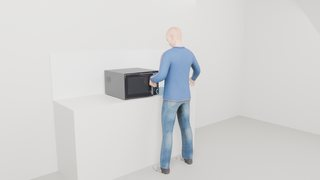
3.8 s · pull door 10.6 s · push door
fam_open_060 microwave_v2 · 15.2 s · 15 steps · hands: left status sentence family grounded target normalized achieved why refused succeeded open the microwave door to 60% open door opening 0.6, joint_from 0.0, joint_to -0.87 joint -0.87, opening 0.6 succeeded wait 1.5 seconds wait duration_s 1.5 succeeded close the door I just opened close door opening 0.0, joint_from -0.87, joint_to 0.0 joint 0.0, opening -0.0
program fam_open_060
fam_open_060 · external camera · 15.2 sfam_open_060 · first-person camera · 15.2 sfam_open_060 · hand close-up camera · 15.2 s
▶ play all three pause ↺ restart
a01_settle pull door push door
gaze left hand right hand body device 0s 5s 10s 15s a01_settle · idle · 0.0–1.0 s · kinematic a01_settle a02_look_door · look_at · 1.0–1.6 s · kinematic a03_reach_door · reach left · 1.0–2.6 s · kinematic a03_reach_door a04_align_door · pregrasp left · 2.6–3.2 s · kinematic a05_pull_door · pull left · 3.2–4.8 s · assisted_grasp a05_pull_door a06_release_door · release left · 4.8–5.4 s · kinematic a07_left_back · retreat left · 5.4–6.8 s · kinematic a07_left_back a08_wait · idle · 6.8–8.3 s · kinematic a08_wait a09_look_door · look_at · 8.3–8.9 s · kinematic a10_reach_door · reach left · 8.3–9.9 s · kinematic a10_reach_door a11_align_door · pregrasp left · 9.9–10.6 s · kinematic a12_push_door · push left · 10.6–12.2 s · assisted_grasp a12_push_door a13_release_door · release left · 12.2–12.8 s · kinematic a14_left_back · retreat left · 12.8–14.2 s · kinematic a14_left_back a15_end · idle · 14.2–15.2 s · kinematic a15_end 0.4 s · a01_settle 3.9 s · pull door 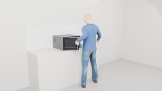
11.1 s · push door
fam_open_100 microwave_v2 · 16.3 s · 15 steps · hands: left status sentence family grounded target normalized achieved why refused succeeded open the microwave door fully open door opening 1.0, joint_from 0.0, joint_to -1.45 joint -1.45, opening 1.0 succeeded wait 1.5 seconds wait duration_s 1.5 succeeded close the door I just opened close door opening 0.0, joint_from -1.45, joint_to 0.0 joint 0.0, opening -0.0
program fam_open_100
fam_open_100 · external camera · 16.4 sfam_open_100 · first-person camera · 16.4 sfam_open_100 · hand close-up camera · 16.4 s
▶ play all three pause ↺ restart
a01_settle pull door push door
gaze left hand right hand body device 0s 5s 10s 15s a01_settle · idle · 0.0–1.0 s · kinematic a02_look_door · look_at · 1.0–1.6 s · kinematic a03_reach_door · reach left · 1.0–2.6 s · kinematic a03_reach_door a04_align_door · pregrasp left · 2.6–3.2 s · kinematic a05_pull_door · pull left · 3.2–5.4 s · assisted_grasp a05_pull_door a06_release_door · release left · 5.4–6.0 s · kinematic a07_left_back · retreat left · 6.0–7.4 s · kinematic a07_left_back a08_wait · idle · 7.4–8.9 s · kinematic a08_wait a09_look_door · look_at · 8.9–9.5 s · kinematic a10_reach_door · reach left · 8.9–10.5 s · kinematic a10_reach_door a11_align_door · pregrasp left · 10.5–11.1 s · kinematic a12_push_door · push left · 11.1–13.3 s · assisted_grasp a12_push_door a13_release_door · release left · 13.3–13.9 s · kinematic a14_left_back · retreat left · 13.9–15.3 s · kinematic a14_left_back a15_end · idle · 15.3–16.3 s · kinematic 0.4 s · a01_settle 4.2 s · pull door 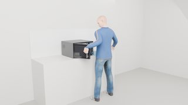
11.9 s · push door One family, different referring expressions: set(Ref[control], level) the knob is named by its zone, by its position in the row, by the zone it controls or by the interaction history; the grounder resolves it on the scene graph
fam_set_fl5 induction_range · 20.6 s · 21 steps · hands: left status sentence family grounded target normalized achieved why refused succeeded set the front-left zone to level 5 set zone_fl setting level 5, joint_from_rad 0.0, joint_to_rad 2.618, regrips 1 joint_rad 2.618, level 5 succeeded wait 2 seconds wait duration_s 2.0 succeeded set the knob I just turned to off set knob_fl setting off, joint_from_rad 2.618, joint_to_rad 0.0, regrips 1 joint_rad 0.0, level 0
program fam_set_fl5
fam_set_fl5 · external camera · 20.6 sfam_set_fl5 · first-person camera · 20.6 sfam_set_fl5 · hand close-up camera · 20.6 s
▶ play all three pause ↺ restart
a01_settle rotate knob_fl wait · fx_zone_fl, fx_steam_fl, display rotate knob_fl
gaze left hand right hand body device 0s 5s 10s 15s 20s a01_settle · idle · 0.0–1.0 s · kinematic a02_look_knob_fl · look_at · 1.0–1.6 s · kinematic a03_reach_knob_fl · reach left · 1.0–3.0 s · kinematic a03_reach_knob_fl a04_align_knob_fl · pregrasp left · 3.0–3.6 s · kinematic a05_turn_knob_fl_1 · rotate left · 3.6–4.9 s · assisted_grasp a05_turn_knob_fl_1 a06_regrip_knob_fl_1 · release left · 4.9–5.4 s · kinematic a07_pinch_knob_fl_1 · pregrasp left · 5.4–6.1 s · kinematic a08_turn_knob_fl_2 · rotate left · 6.1–7.4 s · assisted_grasp a08_turn_knob_fl_2 a09_release_knob_fl · release left · 7.4–7.9 s · kinematic a10_left_back · retreat left · 7.9–9.3 s · kinematic a10_left_back a11_wait · idle · 9.3–11.3 s · kinematic a11_wait a12_look_knob_fl · look_at · 11.3–11.9 s · kinematic a13_reach_knob_fl · reach left · 11.3–13.3 s · kinematic a13_reach_knob_fl a14_align_knob_fl · pregrasp left · 13.3–13.9 s · kinematic a15_turn_knob_fl_1 · rotate left · 13.9–15.2 s · assisted_grasp a15_turn_knob_fl_1 a16_regrip_knob_fl_1 · release left · 15.2–15.7 s · kinematic a17_pinch_knob_fl_1 · pregrasp left · 15.7–16.4 s · kinematic a18_turn_knob_fl_2 · rotate left · 16.4–17.7 s · assisted_grasp a18_turn_knob_fl_2 a19_release_knob_fl · release left · 17.7–18.2 s · kinematic a20_left_back · retreat left · 18.2–19.6 s · kinematic a20_left_back a21_end · idle · 19.6–20.6 s · kinematic display · illustrative_effect display fx_steam_fl · illustrative_effect fx_steam_fl fx_zone_fl · illustrative_effect fx_zone_fl 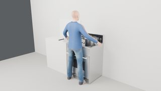
0.4 s · a01_settle 4.3 s · rotate knob_fl 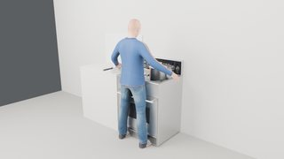
10.1 s · wait · fx_zone_fl, fx_steam_fl, display 15.0 s · rotate knob_fl
fam_set_rr7 induction_range · 25.2 s · 27 steps · hands: right status sentence family grounded target normalized achieved why refused succeeded set the knob controlling the rear-right zone to level 7 set knob_rr setting level 7, joint_from_rad 0.0, joint_to_rad 3.6652, regrips 2 joint_rad 3.6652, level 7 succeeded wait 2 seconds wait duration_s 2.0 succeeded set it to off set knob_rr setting off, joint_from_rad 3.6652, joint_to_rad 0.0, regrips 2 joint_rad 0.0, level 0
program fam_set_rr7
fam_set_rr7 · external camera · 25.2 sfam_set_rr7 · first-person camera · 25.2 sfam_set_rr7 · hand close-up camera · 25.2 s
▶ play all three pause ↺ restart
a01_settle rotate knob_rr wait · fx_zone_rr, display rotate knob_rr
gaze left hand right hand body device 0s 5s 10s 15s 20s 25s a01_settle · idle · 0.0–1.0 s · kinematic a02_look_knob_rr · look_at · 1.0–1.6 s · kinematic a03_reach_knob_rr · reach right · 1.0–3.0 s · kinematic a03_reach_knob_rr a04_align_knob_rr · pregrasp right · 3.0–3.6 s · kinematic a05_turn_knob_rr_1 · rotate right · 3.6–4.9 s · assisted_grasp a06_regrip_knob_rr_1 · release right · 4.9–5.4 s · kinematic a07_pinch_knob_rr_1 · pregrasp right · 5.4–6.0 s · kinematic a08_turn_knob_rr_2 · rotate right · 6.0–7.3 s · assisted_grasp a09_regrip_knob_rr_2 · release right · 7.3–7.8 s · kinematic a10_pinch_knob_rr_2 · pregrasp right · 7.8–8.4 s · kinematic a11_turn_knob_rr_3 · rotate right · 8.4–9.7 s · assisted_grasp a12_release_knob_rr · release right · 9.7–10.2 s · kinematic a13_right_back · retreat right · 10.2–11.6 s · kinematic a14_wait · idle · 11.6–13.6 s · kinematic a14_wait a15_look_knob_rr · look_at · 13.6–14.2 s · kinematic a16_reach_knob_rr · reach right · 13.6–15.6 s · kinematic a16_reach_knob_rr a17_align_knob_rr · pregrasp right · 15.6–16.2 s · kinematic a18_turn_knob_rr_1 · rotate right · 16.2–17.5 s · assisted_grasp a19_regrip_knob_rr_1 · release right · 17.5–18.0 s · kinematic a20_pinch_knob_rr_1 · pregrasp right · 18.0–18.6 s · kinematic a21_turn_knob_rr_2 · rotate right · 18.6–19.9 s · assisted_grasp a22_regrip_knob_rr_2 · release right · 19.9–20.4 s · kinematic a23_pinch_knob_rr_2 · pregrasp right · 20.4–21.0 s · kinematic a24_turn_knob_rr_3 · rotate right · 21.0–22.3 s · assisted_grasp a25_release_knob_rr · release right · 22.3–22.8 s · kinematic a26_right_back · retreat right · 22.8–24.2 s · kinematic a27_end · idle · 24.2–25.2 s · kinematic display · illustrative_effect display fx_zone_rr · illustrative_effect fx_zone_rr 0.4 s · a01_settle 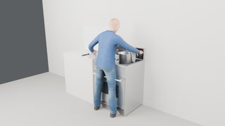
5.2 s · rotate knob_rr 12.4 s · wait · fx_zone_rr, display 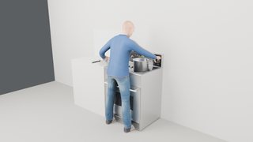
18.2 s · rotate knob_rr
fam_set_second3 induction_range · 19.4 s · 21 steps · hands: left status sentence family grounded target normalized achieved why refused succeeded turn the second knob from the left to level 3 turn knob_rl setting level 3, joint_from_rad 0.0, joint_to_rad 1.5708, regrips 1 joint_rad 1.5708, level 3 succeeded wait 2 seconds wait duration_s 2.0 succeeded turn it to off turn knob_rl setting off, joint_from_rad 1.5708, joint_to_rad 0.0, regrips 1 joint_rad 0.0, level 0
program fam_set_second3
fam_set_second3 · external camera · 19.5 sfam_set_second3 · first-person camera · 19.5 sfam_set_second3 · hand close-up camera · 19.5 s
▶ play all three pause ↺ restart
a01_settle rotate knob_rl wait · fx_zone_rl, display rotate knob_rl
gaze left hand right hand body device 0s 5s 10s 15s a01_settle · idle · 0.0–1.0 s · kinematic a02_look_knob_rl · look_at · 1.0–1.6 s · kinematic a03_reach_knob_rl · reach left · 1.0–3.0 s · kinematic a03_reach_knob_rl a04_align_knob_rl · pregrasp left · 3.0–3.6 s · kinematic a05_turn_knob_rl_1 · rotate left · 3.6–4.7 s · assisted_grasp a06_regrip_knob_rl_1 · release left · 4.7–5.2 s · kinematic a07_pinch_knob_rl_1 · pregrasp left · 5.2–5.8 s · kinematic a08_turn_knob_rl_2 · rotate left · 5.8–6.8 s · assisted_grasp a09_release_knob_rl · release left · 6.8–7.3 s · kinematic a10_left_back · retreat left · 7.3–8.7 s · kinematic a10_left_back a11_wait · idle · 8.7–10.7 s · kinematic a11_wait a12_look_knob_rl · look_at · 10.7–11.3 s · kinematic a13_reach_knob_rl · reach left · 10.7–12.7 s · kinematic a13_reach_knob_rl a14_align_knob_rl · pregrasp left · 12.7–13.4 s · kinematic a15_turn_knob_rl_1 · rotate left · 13.4–14.4 s · assisted_grasp a16_regrip_knob_rl_1 · release left · 14.4–14.9 s · kinematic a17_pinch_knob_rl_1 · pregrasp left · 14.9–15.5 s · kinematic a18_turn_knob_rl_2 · rotate left · 15.5–16.5 s · assisted_grasp a19_release_knob_rl · release left · 16.5–17.0 s · kinematic a20_left_back · retreat left · 17.0–18.4 s · kinematic a20_left_back a21_end · idle · 18.4–19.4 s · kinematic display · illustrative_effect display fx_zone_rl · illustrative_effect fx_zone_rl 0.4 s · a01_settle 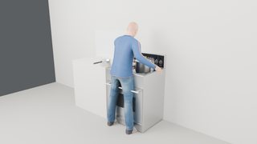
4.1 s · rotate knob_rl 9.5 s · wait · fx_zone_rl, display 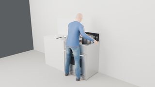
14.2 s · rotate knob_rl turn(Ref[control], by: Extent) a relative turn instead of a target level
fam_turn_right_q induction_range · 19.5 s · 21 steps · hands: right status sentence family grounded target normalized achieved why refused succeeded turn the rightmost knob a quarter turn clockwise turn knob_rr extent_rad 1.5708, joint_from_rad 0.0, joint_to_rad 1.5708, regrips 1 joint_rad 1.5708, level 3 succeeded wait 2 seconds wait duration_s 2.0 succeeded turn the rightmost knob to off turn knob_rr setting off, joint_from_rad 1.5708, joint_to_rad 0.0, regrips 1 joint_rad 0.0, level 0
program fam_turn_right_q
fam_turn_right_q · external camera · 19.5 sfam_turn_right_q · first-person camera · 19.5 sfam_turn_right_q · hand close-up camera · 19.5 s
▶ play all three pause ↺ restart
a01_settle rotate knob_rr wait · fx_zone_rr, display rotate knob_rr
gaze left hand right hand body device 0s 5s 10s 15s a01_settle · idle · 0.0–1.0 s · kinematic a02_look_knob_rr · look_at · 1.0–1.6 s · kinematic a03_reach_knob_rr · reach right · 1.0–3.0 s · kinematic a03_reach_knob_rr a04_align_knob_rr · pregrasp right · 3.0–3.6 s · kinematic a05_turn_knob_rr_1 · rotate right · 3.6–4.7 s · assisted_grasp a06_regrip_knob_rr_1 · release right · 4.7–5.2 s · kinematic a07_pinch_knob_rr_1 · pregrasp right · 5.2–5.8 s · kinematic a08_turn_knob_rr_2 · rotate right · 5.8–6.8 s · assisted_grasp a09_release_knob_rr · release right · 6.8–7.3 s · kinematic a10_right_back · retreat right · 7.3–8.7 s · kinematic a10_right_back a11_wait · idle · 8.7–10.7 s · kinematic a11_wait a12_look_knob_rr · look_at · 10.7–11.3 s · kinematic a13_reach_knob_rr · reach right · 10.7–12.7 s · kinematic a13_reach_knob_rr a14_align_knob_rr · pregrasp right · 12.7–13.4 s · kinematic a15_turn_knob_rr_1 · rotate right · 13.4–14.4 s · assisted_grasp a16_regrip_knob_rr_1 · release right · 14.4–14.9 s · kinematic a17_pinch_knob_rr_1 · pregrasp right · 14.9–15.5 s · kinematic a18_turn_knob_rr_2 · rotate right · 15.5–16.6 s · assisted_grasp a19_release_knob_rr · release right · 16.6–17.1 s · kinematic a20_right_back · retreat right · 17.1–18.5 s · kinematic a20_right_back a21_end · idle · 18.5–19.5 s · kinematic display · illustrative_effect display fx_zone_rr · illustrative_effect fx_zone_rr 0.4 s · a01_settle 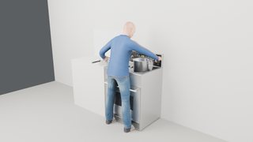
4.1 s · rotate knob_rr 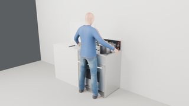
9.5 s · wait · fx_zone_rr, display 14.2 s · rotate knob_rr One family, different destinations: move(Ref[object], onto, Ref[place]) the same pick-and-place expansion sent to different places, named by zone, by position, or in the actor frame
fam_move_fl induction_range · 14.9 s · 9 steps · hands: left status sentence family grounded target normalized achieved why refused succeeded move the saucepan onto the front-left zone move saucepan grasp handle, lift_m 0.14, place zone_fl distance_to_place_m 0.0 succeeded wait 1 second wait duration_s 1.0 succeeded move the pan back where it was move saucepan grasp handle, lift_m 0.14, place prop_home.saucepan distance_to_place_m 0.0
program fam_move_fl
fam_move_fl · external camera · 14.9 sfam_move_fl · first-person camera · 14.9 sfam_move_fl · hand close-up camera · 14.9 s
▶ play all three pause ↺ restart
a01_settle move saucepan → zone_fl move saucepan → home: saucepan
gaze left hand right hand body device 0s 5s 10s a01_settle · idle · 0.0–1.0 s · kinematic a01_settle a02_look_saucepan · look_at · 1.0–1.6 s · kinematic a03_move_saucepan · pick_place left · 1.0–5.5 s · assisted_grasp a03_move_saucepan a04_left_back · retreat left · 5.5–6.9 s · kinematic a04_left_back a05_wait · idle · 6.9–7.9 s · kinematic a05_wait a06_look_saucepan · look_at · 7.9–8.5 s · kinematic a07_move_saucepan · pick_place left · 7.9–12.5 s · assisted_grasp a07_move_saucepan a08_left_back · retreat left · 12.5–13.9 s · kinematic a08_left_back a09_end · idle · 13.9–14.9 s · kinematic a09_end 0.4 s · a01_settle 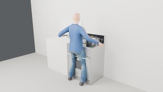
3.8 s · move saucepan → zone_fl 10.7 s · move saucepan → home: saucepan
fam_move_nearme induction_range · 14.9 s · 9 steps · hands: left status sentence family grounded target normalized achieved why refused succeeded move the saucepan onto the front zone on my left move saucepan grasp handle, lift_m 0.14, place zone_fl distance_to_place_m 0.0 succeeded wait 1 second wait duration_s 1.0 succeeded move the pan back where it was move saucepan grasp handle, lift_m 0.14, place prop_home.saucepan distance_to_place_m 0.0
program fam_move_nearme
fam_move_nearme · external camera · 14.9 sfam_move_nearme · first-person camera · 14.9 sfam_move_nearme · hand close-up camera · 14.9 s
▶ play all three pause ↺ restart
a01_settle move saucepan → zone_fl move saucepan → home: saucepan
gaze left hand right hand body device 0s 5s 10s a01_settle · idle · 0.0–1.0 s · kinematic a01_settle a02_look_saucepan · look_at · 1.0–1.6 s · kinematic a03_move_saucepan · pick_place left · 1.0–5.5 s · assisted_grasp a03_move_saucepan a04_left_back · retreat left · 5.5–6.9 s · kinematic a04_left_back a05_wait · idle · 6.9–7.9 s · kinematic a05_wait a06_look_saucepan · look_at · 7.9–8.5 s · kinematic a07_move_saucepan · pick_place left · 7.9–12.5 s · assisted_grasp a07_move_saucepan a08_left_back · retreat left · 12.5–13.9 s · kinematic a08_left_back a09_end · idle · 13.9–14.9 s · kinematic a09_end 0.4 s · a01_settle 3.8 s · move saucepan → zone_fl 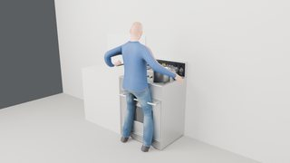
10.7 s · move saucepan → home: saucepan
fam_move_pot_fl induction_range · 15.2 s · 9 steps · hands: right status sentence family grounded target normalized achieved why refused succeeded move the big pot onto the front-left zone move stockpot grasp handle_right, lift_m 0.14, place zone_fl distance_to_place_m 0.0 succeeded wait 1 second wait duration_s 1.0 succeeded move the stockpot back where it was move stockpot grasp handle_right, lift_m 0.14, place prop_home.stockpot distance_to_place_m 0.0
program fam_move_pot_fl
fam_move_pot_fl · external camera · 15.2 sfam_move_pot_fl · first-person camera · 15.2 sfam_move_pot_fl · hand close-up camera · 15.2 s
▶ play all three pause ↺ restart
a01_settle move stockpot → zone_fl move stockpot → home: stockpot
gaze left hand right hand body device 0s 5s 10s 15s a01_settle · idle · 0.0–1.0 s · kinematic a01_settle a02_look_stockpot · look_at · 1.0–1.6 s · kinematic a03_move_stockpot · pick_place right · 1.0–5.7 s · assisted_grasp a03_move_stockpot a04_right_back · retreat right · 5.7–7.1 s · kinematic a04_right_back a05_wait · idle · 7.1–8.1 s · kinematic a05_wait a06_look_stockpot · look_at · 8.1–8.7 s · kinematic a07_move_stockpot · pick_place right · 8.1–12.8 s · assisted_grasp a07_move_stockpot a08_right_back · retreat right · 12.8–14.2 s · kinematic a08_right_back a09_end · idle · 14.2–15.2 s · kinematic a09_end 0.4 s · a01_settle 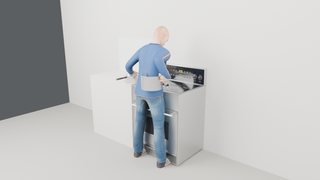
3.8 s · move stockpot → zone_fl 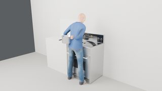
10.9 s · move stockpot → home: stockpot
fam_move_rl induction_range · 15.7 s · 9 steps · hands: left status sentence family grounded target normalized achieved why refused succeeded move the saucepan onto the rear-left zone move saucepan grasp handle, lift_m 0.14, place zone_rl distance_to_place_m 0.0 succeeded wait 1 second wait duration_s 1.0 succeeded move the pan back where it was move saucepan grasp handle, lift_m 0.14, place prop_home.saucepan distance_to_place_m 0.0
program fam_move_rl
fam_move_rl · external camera · 15.7 sfam_move_rl · first-person camera · 15.7 sfam_move_rl · hand close-up camera · 15.7 s
▶ play all three pause ↺ restart
a01_settle move saucepan → zone_rl move saucepan → home: saucepan
gaze left hand right hand body device 0s 5s 10s 15s a01_settle · idle · 0.0–1.0 s · kinematic a01_settle a02_look_saucepan · look_at · 1.0–1.6 s · kinematic a03_move_saucepan · pick_place left · 1.0–5.9 s · assisted_grasp a03_move_saucepan a04_left_back · retreat left · 5.9–7.3 s · kinematic a04_left_back a05_wait · idle · 7.3–8.3 s · kinematic a05_wait a06_look_saucepan · look_at · 8.3–8.9 s · kinematic a07_move_saucepan · pick_place left · 8.3–13.3 s · assisted_grasp a07_move_saucepan a08_left_back · retreat left · 13.3–14.7 s · kinematic a08_left_back a09_end · idle · 14.7–15.7 s · kinematic a09_end 0.4 s · a01_settle 3.9 s · move saucepan → zone_rl 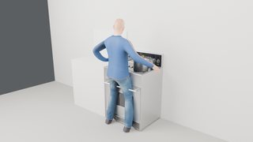
11.3 s · move saucepan → home: saucepan Keypad references and a count argument: press(Ref[control], times) five ways to name a key of the same panel, plus a repeated press
fam_press_refs microwave_v2 · 23.2 s · 34 steps · hands: left 7/7 key presses contact-tested ✓ status sentence family grounded target normalized achieved why refused succeeded press the key labeled Popcorn press key_popcorn times 1, hold_s 0.3 1/1 presses activated succeeded press the top-left key press key_auto_cook times 1, hold_s 0.3 1/1 presses activated succeeded press the key below Microwave press key_clock times 1, hold_s 0.3 1/1 presses activated succeeded press the key right of Grill press key_microwave times 1, hold_s 0.3 1/1 presses activated succeeded press the Start key twice press key_start_30s times 2, hold_s 0.3 2/2 presses activated succeeded wait 2 seconds wait duration_s 2.0 succeeded press the bottom-left key press key_stop_eco times 1, hold_s 0.3 1/1 presses activated
program fam_press_refs
fam_press_refs · external camera · 23.2 sfam_press_refs · first-person camera · 23.2 sfam_press_refs · hand close-up camera · 23.2 s
▶ play all three pause ↺ restart
a01_settle press key_popcorn press key_auto_cook press key_clock press key_microwave press key_start_30s wait · display, interior_light, turntable press key_stop_eco
gaze left hand right hand body device 0s 5s 10s 15s 20s a01_settle · idle · 0.0–1.0 s · kinematic a02_look_popcorn · look_at · 1.0–1.6 s · kinematic a03_reach_popcorn · reach left · 1.0–2.6 s · kinematic a03_reach_popcorn a04_align_popcorn · pregrasp left · 2.6–3.2 s · kinematic a05_press_popcorn · press left · 3.2–3.9 s · contact_dynamics a06_release_popcorn · release left · 3.9–4.4 s · kinematic a07_look_auto_cook · look_at · 4.4–5.0 s · kinematic a08_align_auto_cook · pregrasp left · 4.4–5.2 s · kinematic a09_press_auto_cook · press left · 5.2–5.9 s · contact_dynamics a10_release_auto_cook · release left · 5.9–6.4 s · kinematic a11_look_clock · look_at · 6.4–7.0 s · kinematic a12_align_clock · pregrasp left · 6.4–7.1 s · kinematic a13_press_clock · press left · 7.1–7.8 s · contact_dynamics a14_release_clock · release left · 7.8–8.3 s · kinematic a15_look_microwave · look_at · 8.3–8.9 s · kinematic a16_align_microwave · pregrasp left · 8.3–9.1 s · kinematic a17_press_microwave · press left · 9.1–9.8 s · contact_dynamics a18_release_microwave · release left · 9.8–10.3 s · kinematic a19_look_start_30s · look_at · 10.3–10.9 s · kinematic a20_align_start_30s · pregrasp left · 10.3–11.0 s · kinematic a21_press_start_30s_1 · press left · 11.0–11.7 s · contact_dynamics a22_lift_start_30s_1 · release left · 11.7–12.0 s · kinematic a23_realign_start_30s_1 · pregrasp left · 12.0–12.6 s · kinematic a24_press_start_30s_2 · press left · 12.6–13.3 s · contact_dynamics a25_release_start_30s · release left · 13.3–13.8 s · kinematic a26_left_back · retreat left · 13.8–15.2 s · kinematic a27_wait · idle · 15.2–17.2 s · kinematic a27_wait a28_look_stop_eco · look_at · 17.2–17.8 s · kinematic a29_reach_stop_eco · reach left · 17.2–18.9 s · kinematic a29_reach_stop_eco a30_align_stop_eco · pregrasp left · 18.9–19.6 s · kinematic a31_press_stop_eco · press left · 19.6–20.3 s · contact_dynamics a32_release_stop_eco · release left · 20.3–20.8 s · kinematic a33_left_back · retreat left · 20.8–22.2 s · kinematic a34_end · idle · 22.2–23.2 s · kinematic display · illustrative_effect display interior_light · illustrative_effect interior_light turntable · device_motor turntable contact_start @ 3.54 s (key_popcorn, measured) button_activated @ 3.58 s (key_popcorn, measured) button_released @ 4.04 s (key_popcorn, measured) contact_end @ 4.04 s (key_popcorn, measured) contact_start @ 5.49 s (key_auto_cook, measured) button_activated @ 5.53 s (key_auto_cook, measured) button_released @ 5.99 s (key_auto_cook, measured) contact_end @ 5.99 s (key_auto_cook, measured) contact_start @ 7.44 s (key_clock, measured) button_activated @ 7.48 s (key_clock, measured) button_released @ 7.94 s (key_clock, measured) contact_end @ 7.94 s (key_clock, measured) contact_start @ 9.39 s (key_microwave, measured) button_activated @ 9.43 s (key_microwave, measured) button_released @ 9.89 s (key_microwave, measured) contact_end @ 9.89 s (key_microwave, measured) contact_start @ 11.34 s (key_start_30s, measured) button_activated @ 11.38 s (key_start_30s, measured) button_released @ 11.83 s (key_start_30s, measured) contact_end @ 11.83 s (key_start_30s, measured) contact_start @ 12.89 s (key_start_30s, measured) button_activated @ 12.93 s (key_start_30s, measured) button_released @ 13.39 s (key_start_30s, measured) contact_end @ 13.39 s (key_start_30s, measured) contact_start @ 19.87 s (key_stop_eco, measured) button_activated @ 19.91 s (key_stop_eco, measured) button_released @ 20.37 s (key_stop_eco, measured) contact_end @ 20.37 s (key_stop_eco, measured) 0.4 s · a01_settle 2.4 s · press key_popcorn 5.2 s · press key_auto_cook 7.2 s · press key_clock 9.1 s · press key_microwave 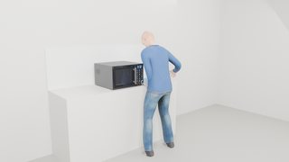
12.3 s · press key_start_30s 16.0 s · wait · display, interior_light, turntable 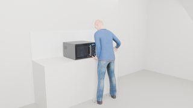
19.6 s · press key_stop_eco Requests the environment refuses, with the reason ambiguous or impossible requests change nothing; one executable action in the same program still runs
fam_rejections induction_range · 10.7 s · 15 steps · hands: left 3/3 key presses contact-tested ✓ status sentence family grounded target normalized achieved why refused rejected set the left knob to level 5 set ambiguous_reference: target 'the left knob': ambiguous_reference; candidates ['knob_fl', 'knob_rl'] rejected set the front-left zone to level 5.3 set zone_fl setting level 5.3 unsupported_value: knob_fl has integer levels: level 5.3 is not a position rejected open the oven door to 60% open oven_door precondition_failed: the oven door swings down 0.56 m into the person at this stance (fixed feet) rejected pour 2/5 cup of water from the kettle in my hand into the pot on the front-right zone pour volume_mL 96.0 target_not_found: source 'the kettle in my hand': target_not_found (no entity named 'kettle') rejected move the stockpot onto the front-right zone move stockpot precondition_failed: stockpot is already there succeeded go to the drawer go_to drawer distance_m 0.103 succeeded set the oven to 400 °F set induction_range setting 400 °F 3/3 presses activated
program fam_rejections
fam_rejections · external camera · 10.8 sfam_rejections · first-person camera · 10.8 sfam_rejections · hand close-up camera · 10.8 s
▶ play all three pause ↺ restart
a01_settle press key_bake press key_up
gaze left hand right hand body device 0s 5s 10s a01_settle · idle · 0.0–1.0 s · kinematic a01_settle a02_look_bake · look_at · 1.0–1.6 s · kinematic a03_reach_bake · reach left · 1.0–3.0 s · kinematic a03_reach_bake a04_align_bake · pregrasp left · 3.0–3.6 s · kinematic a05_press_bake · press left · 3.6–4.3 s · contact_dynamics a05_press_bake a06_release_bake · release left · 4.3–4.8 s · kinematic a07_look_up · look_at · 4.8–5.4 s · kinematic a08_align_up · pregrasp left · 4.8–5.6 s · kinematic a08_align_up a09_press_up_1 · press left · 5.6–6.3 s · contact_dynamics a09_press_up_1 a10_lift_up_1 · release left · 6.3–6.6 s · kinematic a11_realign_up_1 · pregrasp left · 6.6–7.1 s · kinematic a12_press_up_2 · press left · 7.1–7.8 s · contact_dynamics a12_press_up_2 a13_release_up · release left · 7.8–8.3 s · kinematic a14_left_back · retreat left · 8.3–9.7 s · kinematic a14_left_back a15_end · idle · 9.7–10.7 s · kinematic a15_end contact_start @ 3.91 s (key_bake, measured) button_activated @ 3.95 s (key_bake, measured) button_released @ 4.41 s (key_bake, measured) contact_end @ 4.41 s (key_bake, measured) contact_start @ 5.86 s (key_up, measured) button_activated @ 5.90 s (key_up, measured) button_released @ 6.35 s (key_up, measured) contact_end @ 6.35 s (key_up, measured) contact_start @ 7.41 s (key_up, measured) button_activated @ 7.45 s (key_up, measured) button_released @ 7.91 s (key_up, measured) contact_end @ 7.91 s (key_up, measured) 0.4 s · a01_settle 2.5 s · press key_bake 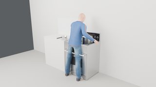
7.2 s · press key_up